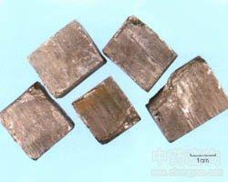

自然铜

拼音
Zì Rán Tónɡ
别名
石髓铅（《雷公炮炙论》）。
来源
本品为硫化物类矿物黄铁矿族黄铁矿。主含二硫化铁（FeS2）。采挖后，除去杂质。
生境分布
为分布较广的硫化物，并能在各种地质条件下形成。
药材特点
等轴晶系。晶体形状有多种，如立方体、八面体和五角十二面体及其聚形，亦有作葡萄状、粒状、钟乳状及致密的块状者。晶面上有条纹。颜色为浅黄铜色。条痕为棕黑色或微绿黑色。强金属光泽。解理为不完全的立方体。断口呈参差状，有时为贝壳状。硬度6～6.5。比重4.9～5.2。性较脆。
性状
本品晶形多为立方体，集合体呈致密块状。表面亮淡黄色，有金属光泽；有的黄棕色或棕褐色，无金属光泽。具条纹，条痕绿黑色或棕红色。体重，质坚硬或稍脆，易砸碎，断面黄白色，有金属光泽；或断面棕褐色，可见银白色亮星。
性味
辛，平。
功能主治
散瘀，接骨，止痛。用于跌扑肿痛，筋骨折伤。
用法用量
3～9g，多入丸散服，若入煎剂宜先煎。外用适量。
化学成分
含二硫化铁，其中含铁46.6％，硫53.4％。还含铜、镍、砷、锑等杂质，但也有不含的。
药理作用
1：对骨折愈合的作用
2：用人工方法使家兔股骨骨折后：每日服用自然铜与虎骨各半的合剂1钱，共服1.5月，对骨折愈合有促进作用，表现为骨痂生长快，量多且较成熟，抗折力亦较对照组强
3：单独使用则效果很差
4：含有自然铜的复方接骨散（含自然铜、骨碎补等共19味）给家兔每日服3克：共服2～8周，对桡骨骨折愈合有促进作用，表现为愈合骨再折的牵引力较对照组大
摘录
《中国药典》